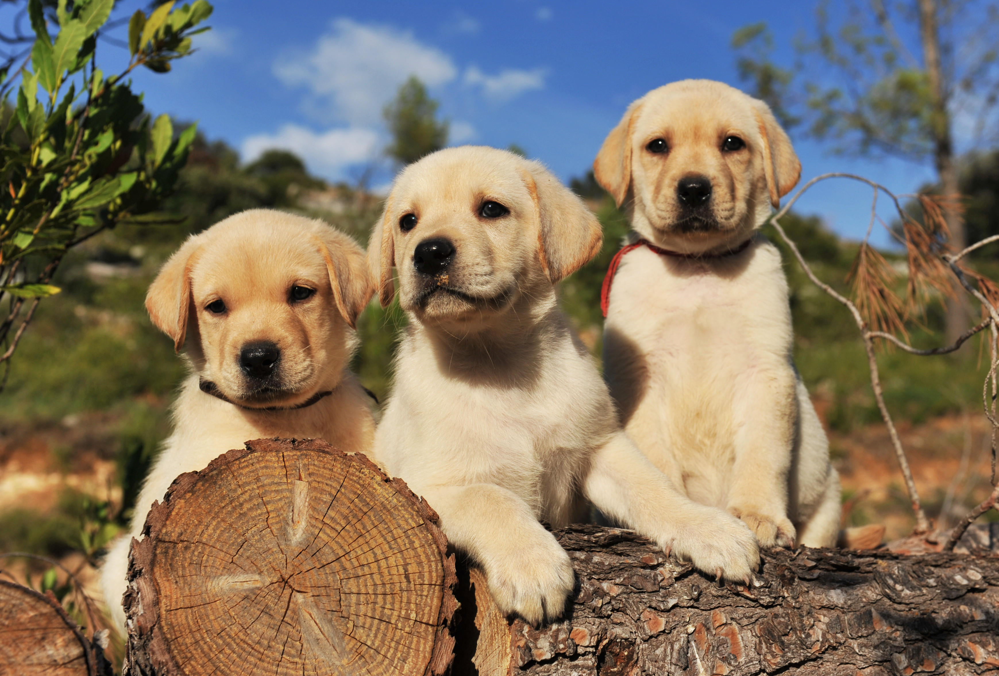
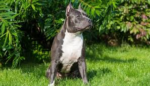
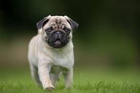
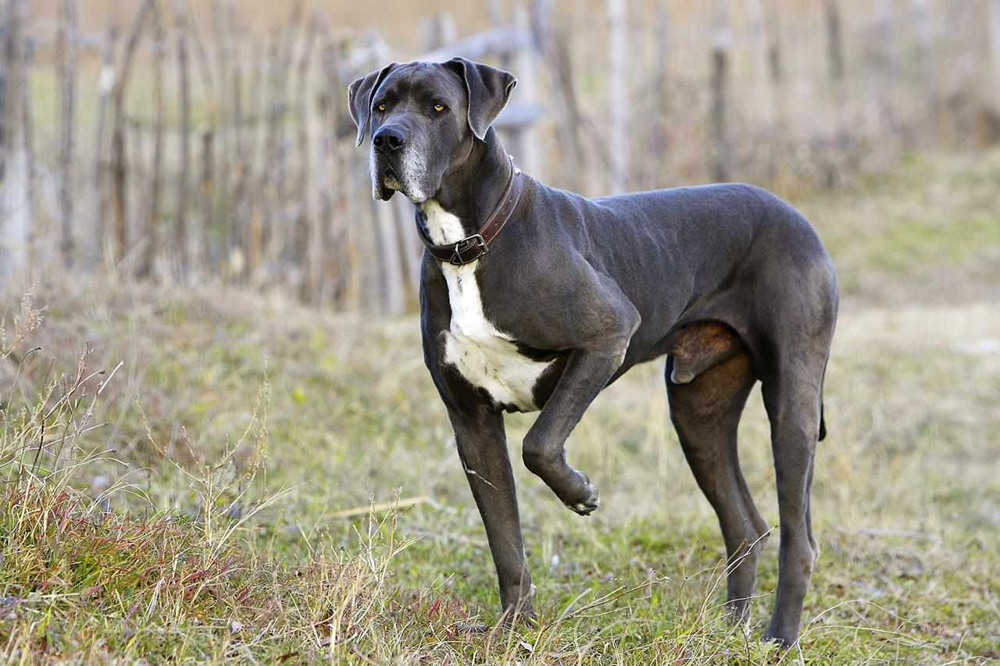

Family Friendly
The sweet-faced, lovable Labrador Retriever is America's most popular dog breed. Labs are friendly,
outgoing, and high-spirited companions who have more than enough affection to go around for a family
looking for a medium-to-large dog. The sturdy, well-balanced Labrador Retriever can, depending on the sex,
stand from 21.5 to 24.5 inches at the shoulder and weigh between 55 to 80 pounds. The dense, hard coat
comes in yellow, black, and a luscious chocolate. The head is wide, the eyes glimmer with kindliness, and
the thick, tapering 'otter tail' seems to be forever signaling the breed's innate eagerness. Labs are
famously friendly. They are companionable housemates who bond with the whole family, and they socialize
well with neighbor dogs and humans alike. But don't mistake his easygoing personality for low energy: The
Lab is an enthusiastic athlete that requires lots of exercise, like swimming and marathon games of fetch,
to keep physically and mentally fit.
Facts
1. Labradors have webbed toes and are therefore great swimmers. This webbing can also effectively act as a
snowshoe in colder climates, as it keeps snow from collecting between their toes.
2. Their coat has two layers: a short, thick topcoat and a relatively water-resistant undercoat. This
two-layer coat protects them from cold and wet weather.
3. They are the most commonly used breed for guide dogs. They are intelligent, easy to train, eager to
please and have a gentle temperament.
4. Labradors are the most popular dog breed in America & the UK.
5. This breed loves to be around people and needs a lot of affection, as well as plenty of exercise to burn
off all that energy!
6. Labradors have working roles in all sorts of sectors including search and rescue, therapy, hunting,
assisting the disabled and tracking.

Hunter
The American Pit Bull Terrier is a companion and family dog breed. Originally bred to “bait” bulls, the
breed evolved into all-around farm dogs, and later moved into the house to become “nanny dogs” because
they were so gentle around children.

The Pug is a breed of dog originally from China, with physically distinctive features of a wrinkly,
short-muzzled face, and curled tail. The breed has a fine, glossy coat that comes in a variety of colors,
most often fawn or black, and a compact, square body with well developed and thick muscles all over the
body.
Samll Dogs

Imported Dogs
The Siberian Husky is a medium-sized working sled dog breed. The breed belongs to the Spitz genetic
family. It is recognizable by its thickly furred double coat, erect triangular ears, and distinctive
markings, and is smaller than the similar-looking Alaskan Malamute.
Local Dog
The dog is a domesticated descendant of the wolf. Also called the domestic dog, it is derived from the
extinct Pleistocene wolf, and the modern wolf is the dog's nearest living relative. Dogs were the first
species to be domesticated by hunter-gatherers over 15,000 years ago before the development of agriculture.
Large Dogs
The Great Dane is a large sized dog breed originating from Germany. The Great Dane descends from hunting
dogs from the Middle Ages used to hunt wild boar and deer, and as guardians of German nobility. It is one
of the two largest dog breeds in the world, along with the Irish Wolfhound.
